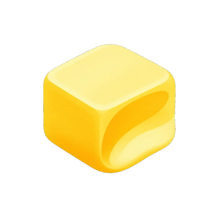

Butterd
Duchamp performance module
butter engine
Session controls for the hardware your kernel exposes.
CPU clusters
Reading supported governors…
Touch response
Reading driver capabilities…
Native 480 Hz can appear as about 500 Hz in whole-millisecond testers. A high-sampling mode flag alone does not prove a physical report rate.
Advanced controls
Off by default. These can increase power use and heat. Requests last for this boot and are not continuously forced against ROM services.
Pixel identity
Ready on installation. Choose another model to change the compatibility profile.
Build, Play Store build and scoped property spoofing are enabled by default. Restart affected apps or reboot after changing profiles. A profile does not guarantee a Play Integrity verdict.
Connecting to the root manager…
Hardware
Waiting for device readings.